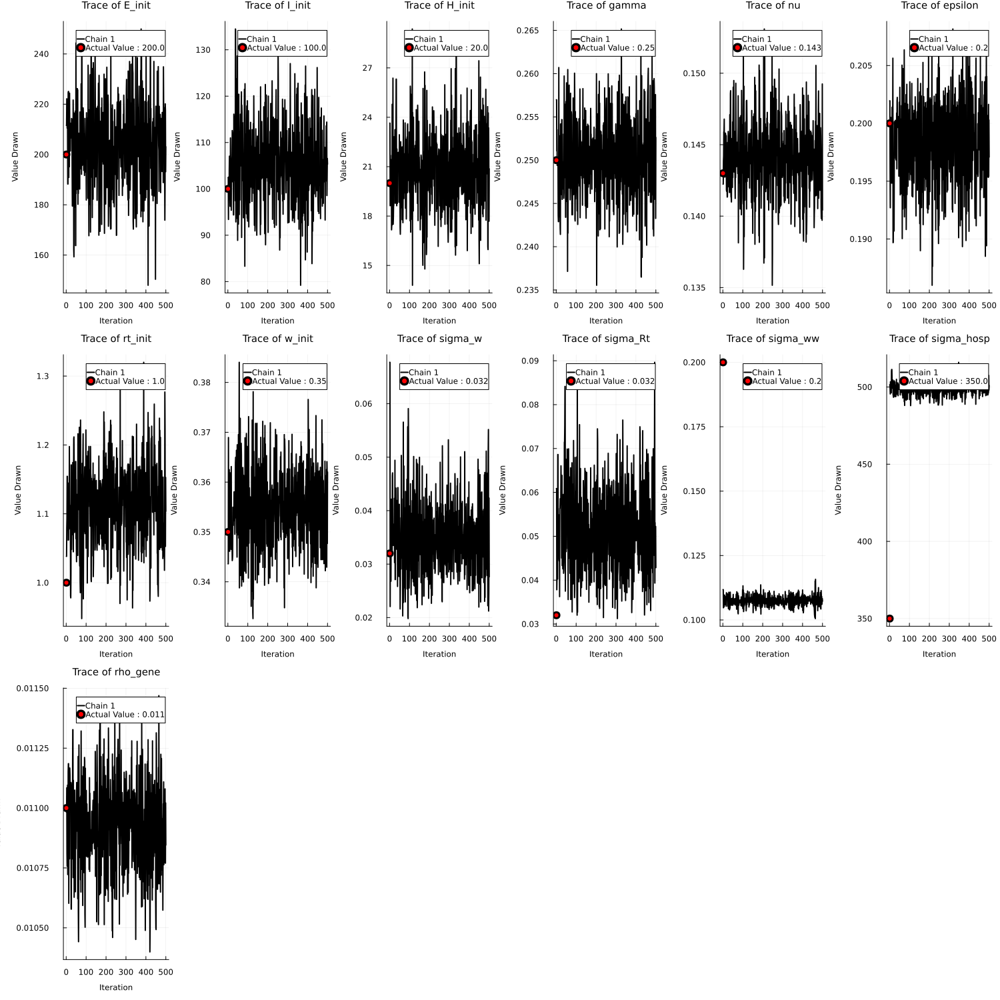
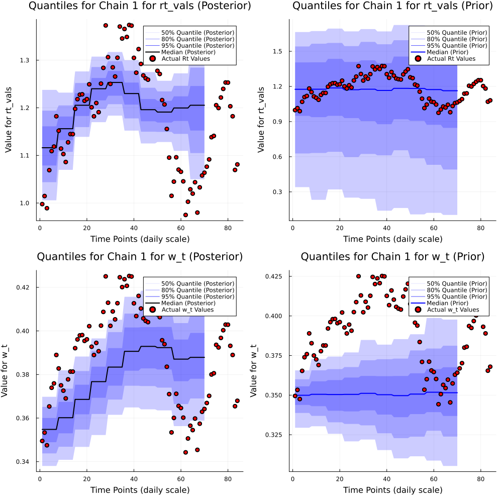
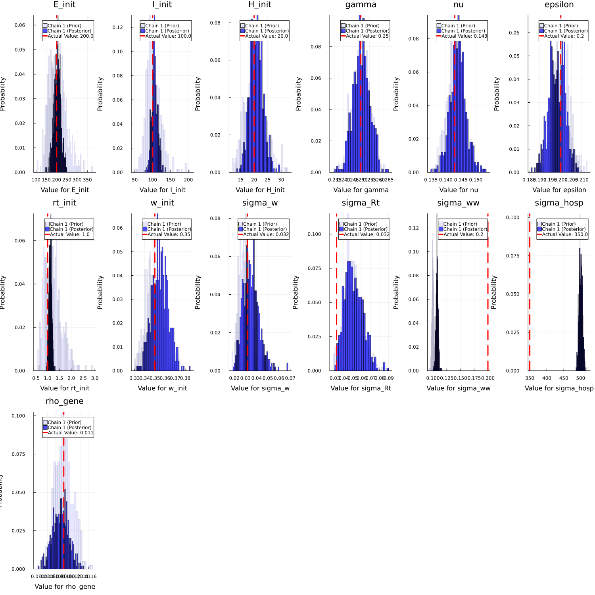

Generating Posterior Distribution Samples with UCIWWEIHR ODE Compartmental Based Model with Forecasting.
Here we extend the previous tutorial to include forecasting capabilities. We start with generating out data using generate_simulation_data_uciwweihr's alternate parameterization where we do not prespecify the effective reproduction number and hospitalization probability but instead preform a log-normal random walk and a logit-normal random walk respectively. We then sample from the posterior distribution using the uciwweihr_fit.jl function. We then generate desired quantities and forecast for a given time period with the posterior predictive distribution, using uciwweihr_gq_pp.jl.
1. Data Generation.
Here we generate two datasets, one with 150 time points and one with 178 time points. We will use the 150 time point dataset for fitting and the 178 time point dataset for forecast evaluation.
using UCIWWEIHR
# Running simulation function with presets
params = create_uciwweihr_sim_params(
time_points = 150
)
df = generate_simulation_data_uciwweihr(params)
params_ext = create_uciwweihr_sim_params(
time_points = 178
)
df_ext = generate_simulation_data_uciwweihr(params_ext)
first(df, 5)| Row | obstimes | log_ww_conc | hosp | rt | wt | E_ode_comp_sol | I_ode_comp_sol | H_ode_comp_sol |
|---|---|---|---|---|---|---|---|---|
| Int64 | Float64 | Int64 | Float64 | Float64 | Float64 | Float64 | Float64 | |
| 1 | 1 | 0.346996 | 18 | 0.99777 | 0.349492 | 170.433 | 129.53 | 21.6338 |
| 2 | 2 | 0.550305 | 24 | 1.01468 | 0.353323 | 150.46 | 149.458 | 24.069 |
| 3 | 3 | 0.502858 | 40 | 0.989119 | 0.347515 | 137.304 | 162.943 | 26.8819 |
| 4 | 4 | 0.883632 | 31 | 1.06904 | 0.365335 | 127.935 | 172.051 | 29.5661 |
| 5 | 5 | 0.790455 | 33 | 1.10915 | 0.373918 | 123.352 | 178.364 | 32.5075 |
first(df_ext, 5)| Row | obstimes | log_ww_conc | hosp | rt | wt | E_ode_comp_sol | I_ode_comp_sol | H_ode_comp_sol |
|---|---|---|---|---|---|---|---|---|
| Int64 | Float64 | Int64 | Float64 | Float64 | Float64 | Float64 | Float64 | |
| 1 | 1 | 0.346996 | 24 | 0.99777 | 0.349492 | 170.433 | 129.53 | 21.6338 |
| 2 | 2 | 0.550305 | 25 | 1.01468 | 0.353323 | 150.46 | 149.458 | 24.069 |
| 3 | 3 | 0.502858 | 17 | 0.989119 | 0.347515 | 137.304 | 162.943 | 26.8819 |
| 4 | 4 | 0.883632 | 29 | 1.06904 | 0.365335 | 127.935 | 172.051 | 29.5661 |
| 5 | 5 | 0.790455 | 26 | 1.10915 | 0.373918 | 123.352 | 178.364 | 32.5075 |
2. Sampling from the Posterior Distribution and Posterior Predictive Distribution.
Here we sample from the posterior distribution using the uciwweihr_fit.jl function. First, we setup some presets, where we need to use create_uciwweihr_model_params() to get default parameters for the model. Then we have an array where index 1 contains the posterior/prior predictive samples, index 2 contains the posterior/prior generated quantities samples, and index 3 contains the original sampled parameters for the model. The difference here is that we set forecast = true and forecast_weeks = 4 to forecast 4 weeks into the future. One other thing to note, is that we allow misalignment of hospital and wastewater data's observed times. For this tutorial, we use the same observed points.
data_hosp = df.hosp
data_wastewater = df.log_ww_conc
obstimes_hosp = df.obstimes
obstimes_wastewater = df.obstimes
max_obstime = max(length(obstimes_hosp), length(obstimes_wastewater))
param_change_times = 1:7:max_obstime # Change every week
priors_only = false
n_samples = 200
forecast = true
forecast_weeks = 4
model_params = create_uciwweihr_model_params()
samples = uciwweihr_fit(
data_hosp,
data_wastewater,
obstimes_hosp,
obstimes_wastewater;
param_change_times,
priors_only,
n_samples,
params = model_params
)
model_output = uciwweihr_gq_pp(
samples,
data_hosp,
data_wastewater,
obstimes_hosp,
obstimes_wastewater;
param_change_times = param_change_times,
params = model_params,
forecast = forecast,
forecast_weeks = forecast_weeks
)
first(model_output[1][:,1:5], 5)| Row | iteration | chain | Rt_params_non_centered[25] | Rt_params_non_centered[26] | Rt_params_non_centered[27] |
|---|---|---|---|---|---|
| Int64 | Int64 | Float64 | Float64 | Float64 | |
| 1 | 1 | 1 | -0.740052 | 0.631051 | -1.73773 |
| 2 | 2 | 1 | -0.740052 | 0.631051 | -1.73773 |
| 3 | 3 | 1 | -0.740052 | 0.631051 | -1.73773 |
| 4 | 4 | 1 | -0.740052 | 0.631051 | -1.73773 |
| 5 | 5 | 1 | -0.740052 | 0.631051 | -1.73773 |
first(model_output[2][:,1:5], 5)| Row | iteration | chain | E_init | I_init | H_init |
|---|---|---|---|---|---|
| Int64 | Int64 | Float64 | Float64 | Float64 | |
| 1 | 1 | 1 | 235.242 | 97.2858 | 16.7345 |
| 2 | 2 | 1 | 185.432 | 110.042 | 22.9187 |
| 3 | 3 | 1 | 177.815 | 120.401 | 19.0302 |
| 4 | 4 | 1 | 208.828 | 107.295 | 19.9111 |
| 5 | 5 | 1 | 189.612 | 110.36 | 20.7868 |
first(model_output[3][:,1:5], 5)| Row | iteration | chain | E_init_non_centered | I_init_non_centered | H_init_non_centered |
|---|---|---|---|---|---|
| Int64 | Int64 | Float64 | Float64 | Float64 | |
| 1 | 101 | 1 | 0.704849 | -0.13571 | -0.653101 |
| 2 | 102 | 1 | -0.291351 | 0.502108 | 0.583744 |
| 3 | 103 | 1 | -0.443694 | 1.02006 | -0.193954 |
| 4 | 104 | 1 | 0.176569 | 0.364738 | -0.0177813 |
| 5 | 105 | 1 | -0.207768 | 0.518013 | 0.15736 |
3. MCMC Diagnostic Plots/Results Along with Posterior Predictive Distribution.
We can again look at model diagnostics, posterior distribution of time or non-time varying parameters, and the posterior predictive distribution extended for forecasting. We can also add certain parameters to ensure priors will be plotted alongside their corresponding posteriors.
uciwweihr_visualizer(
data_hosp,
data_wastewater,
forecast_weeks,
obstimes_hosp,
obstimes_wastewater,
param_change_times,
2024,
forecast,
model_params;
pp_samples = model_output[1],
gq_samples = model_output[2],
obs_data_hosp = df_ext.hosp,
obs_data_wastewater = df_ext.log_ww_conc,
actual_rt_vals = df_ext.rt,
actual_w_t = df_ext.wt,
actual_non_time_varying_vals = params,
bayes_dist_type = "Posterior",
save_plots = true,
plot_name_to_save_mcmcdiag = "mcmc_diagnosis_plots1",
plot_name_to_save_time_varying = "mcmc_time_varying_parameter_plots1",
plot_name_to_save_non_time_varying = "mcmc_nontime_varying_parameter_plots1",
plot_name_to_save_pred_param = "mcmc_pred_parameter_plots1"
)Effective Sample Size for E_init for Chain 1: 397.0
Effective Sample Size for I_init for Chain 1: 460.0
Effective Sample Size for H_init for Chain 1: 460.0
Effective Sample Size for gamma for Chain 1: 175.0
Effective Sample Size for nu for Chain 1: 163.0
Effective Sample Size for epsilon for Chain 1: 166.0
Effective Sample Size for rt_init for Chain 1: 201.0
Effective Sample Size for w_init for Chain 1: 223.0
Effective Sample Size for sigma_w for Chain 1: 106.0
Effective Sample Size for sigma_Rt for Chain 1: 283.0
Effective Sample Size for rho_gene for Chain 1: 167.0
Plot saved to plots/mcmc_diagnosis_plots1.png
Generating time varying parameter plots (with priors and with wastewater)...
Using uciwweihr_model with wastewater!!!
┌ Warning: Only a single thread available: MCMC chains are not sampled in parallel
└ @ AbstractMCMC ~/.julia/packages/AbstractMCMC/jSkbw/src/sample.jl:382
Sampling (1 threads) 0%| | ETA: N/A
Sampling (1 threads) 100%|██████████████████████████████| Time: 0:00:04
Sampling (1 threads) 100%|██████████████████████████████| Time: 0:00:04
Using uciwweihr_model with wastewater!!!
Plot saved to plots/mcmc_time_varying_parameter_plots1.png
Generating non-time varying parameter plots (with priors and with wastewater)...
Using uciwweihr_model with wastewater!!!
┌ Warning: Only a single thread available: MCMC chains are not sampled in parallel
└ @ AbstractMCMC ~/.julia/packages/AbstractMCMC/jSkbw/src/sample.jl:382
Sampling (1 threads) 0%| | ETA: N/A
Sampling (1 threads) 100%|██████████████████████████████| Time: 0:00:00
Sampling (1 threads) 100%|██████████████████████████████| Time: 0:00:00
Using uciwweihr_model with wastewater!!!
Plot saved to plots/mcmc_nontime_varying_parameter_plots1.png
Plot saved to plots/mcmc_pred_parameter_plots1.png3.1. MCMC Diagnostic Plots.

3.2. Time Varying Parameter Results Plot.

3.3. Non-Time Varying Parameter Results Plot.

3.4. Posterior Predictive Distribution Plot.